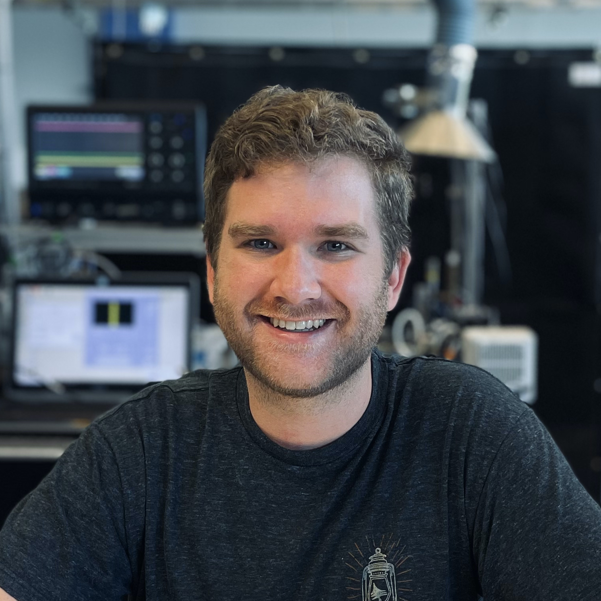

My name is Dylan Kline and I am the Deputy Group Leader for the Rapid Prototyping of Energetics group at the Lawrence Livermore National Laboratoy (LLNL) where we specialize in advanced manufacturing of energetic materials.
I earned my PhD in Chemical Engineering from the University of Maryland College Park in 2020 where I worked on synthesis and characterization of energetic nanomaterials with tunable reactivity.
I have also previously worked as an Engineer at NASA Goddard Space Flight Center in the Contamination & Coatings Engineering Branch (Code 546) where I was responsible for investigating new materials for spaceflight application and creating/maintaining a variety of programming environments for efficient data transfer across the agency.
I enjoy learning about new innovations in engineering, energetic materials, and propulsion so that I can lend a hand in turning science fiction into nonfiction.
While I'm not buried in books or exploring new places with friends, I like to produce music and learn about graphic design in my spare time.
I took up piano at 10 years old and transitioned into music production at the age of 17.
Music is a passion of mine and I am always excited to talk to someone who can expose me to something new.
Please reach out to me if you would like to talk engineering, energetic materials, propulsion, education, music, or anything you may find interesting here.
Education & Work
Learn more about my experiences between the University of Arizona, University of Maryland, NASA, and LLNL.
Research
A full and up-to-date list of my peer-reviewed scholarly journal publications.